Galería
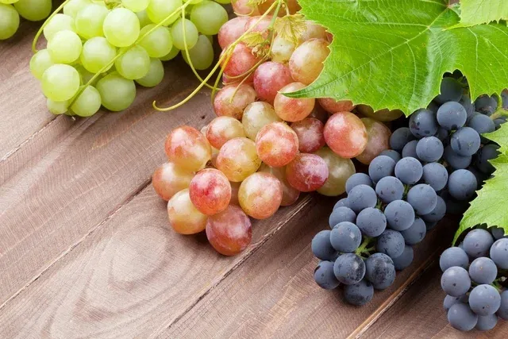 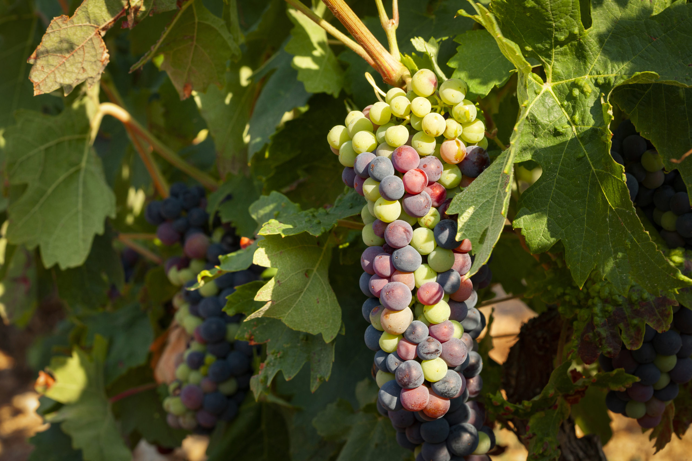 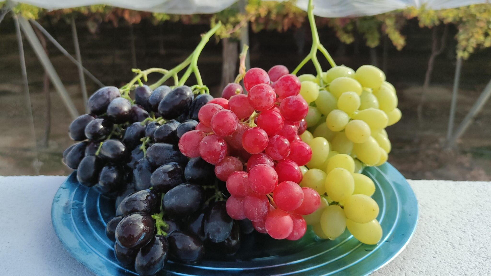
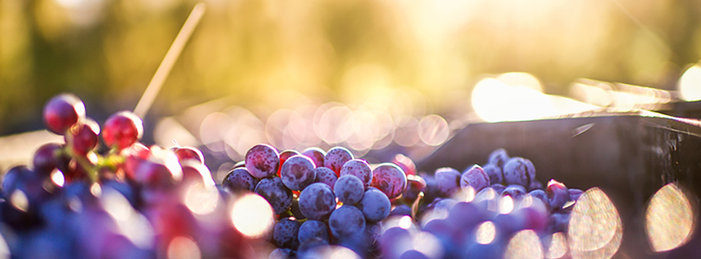
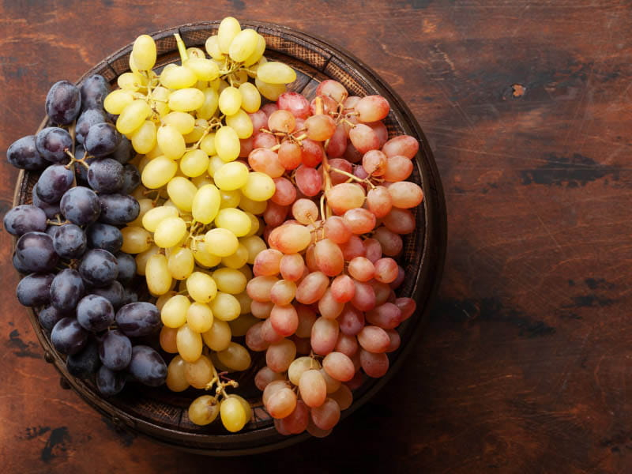
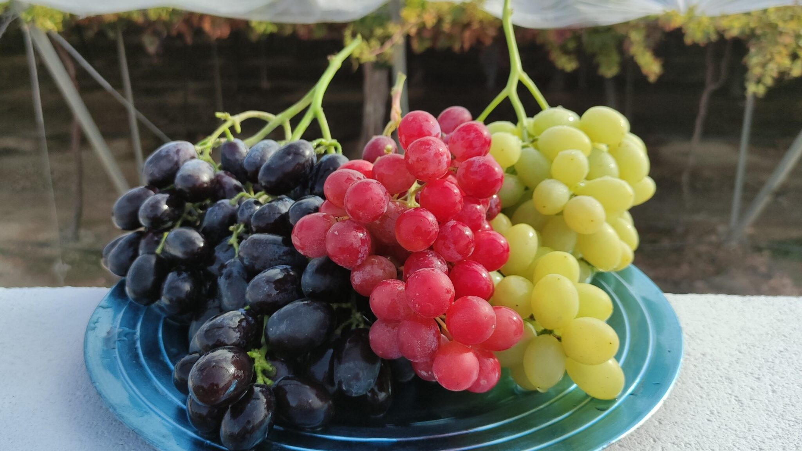
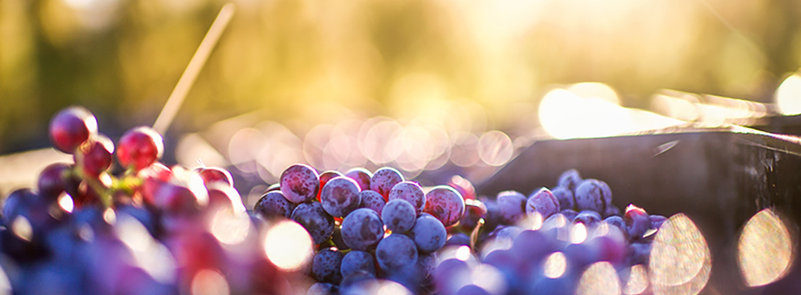
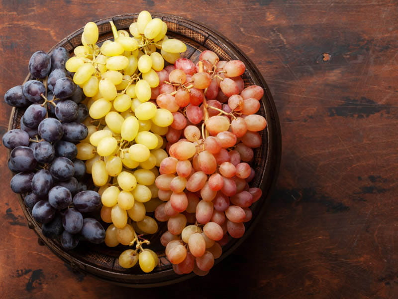
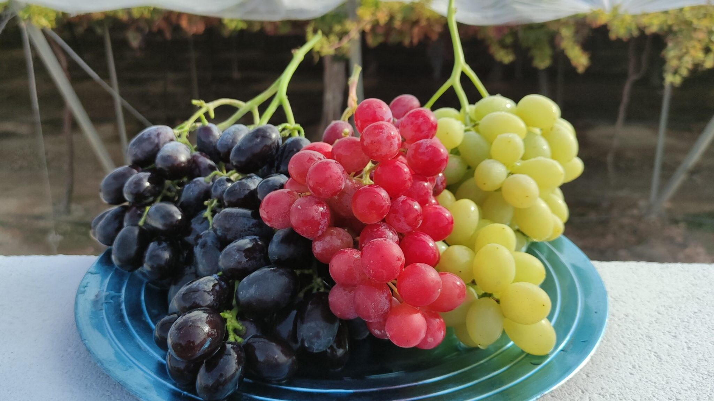
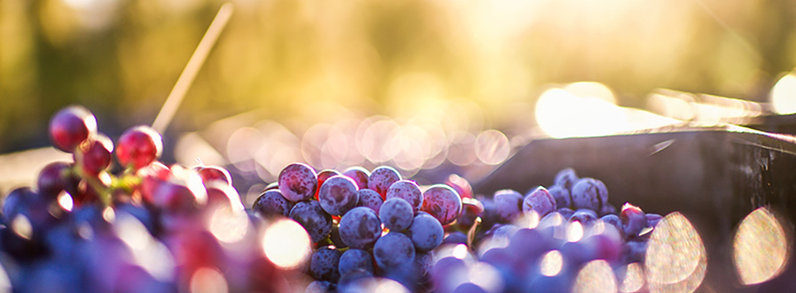
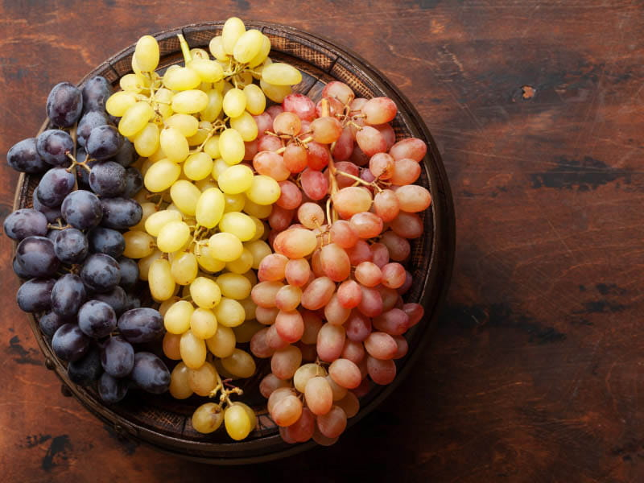
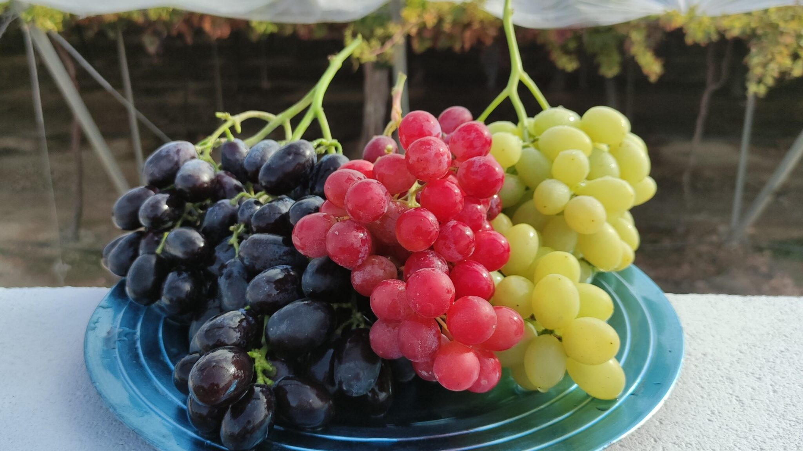
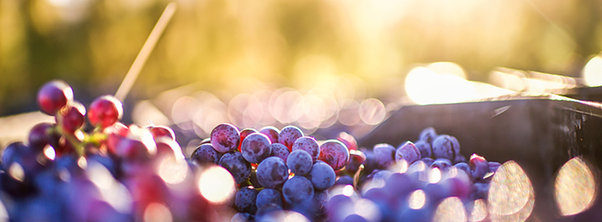
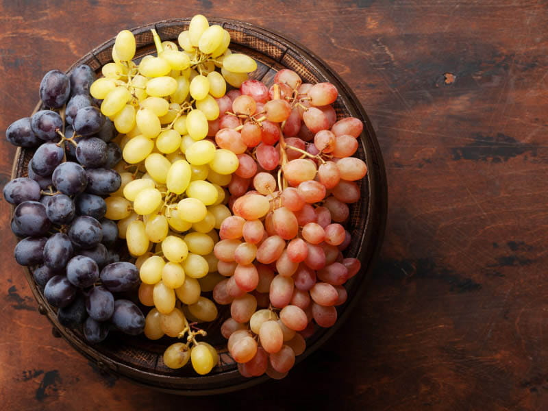
Las uvas provienen de la vid (Vitis vinifera), originaria de Asia y el Cáucaso, donde su cultivo comenzó en el Neolítico. La viticultura se extendió desde el Neolítico en Asia Menor y Oriente Próximo hacia Europa, gracias a griegos y romanos, y finalmente los españoles la introdujeron en América.
Asía y el Cáucaso: El origen de la vid se sitúa en la región del Cáucaso y Asia Menor, desde donde se dispersó al resto del mundo.
Neolítico: El cultivo de la vid se inició en el Neolítico (hace unos 7.000 años) y su propagación hacia Europa a través del Mediterráneo convirtió a la uva en una de las frutas más antiguas cultivadas por el ser humano.
Antigüedad: Los antiguos griegos y romanos desarrollaron la viticultura y expandieron su cultivo por toda Europa.
América: Los españoles llevaron la vid y su cultivo al continente americano.
Requerimientos: Requiere acumular suficiente calor para una correcta maduración, aunque es resistente a heladas y a climas fríos.
Suelo: No exige suelos de gran calidad, prosperando bien en aquellos de riqueza media o pobre.
Propagación: La vid se puede propagar por semilla, estaca, acodo o injertos.
La uva se consume en todo el mundo y se utiliza principalmente de tres formas:
Vino: Aproximadamente dos tercios de la producción mundial de uva se destinan a la elaboración de vino. Fruta de mesa: Un tercio de la producción se come fresca como fruta de mesa. Pasas: El resto de la producción se convierte en pasas.